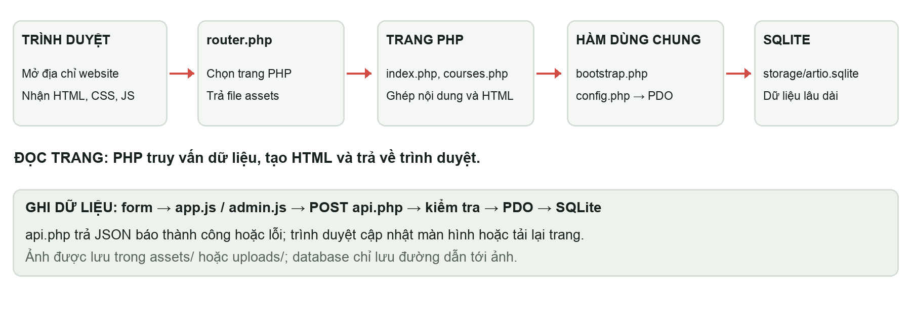

Kết cấu code và ý nghĩa từng phần
Bạn có thể hình dung website là một cửa hàng trưng bày tài nguyên. Giao diện là phần người xem thấy; PHP là người lấy đúng nội dung ra; database là kho lưu nội dung. Admin là quầy quản lý dùng để cập nhật kho. Không có một database riêng cho admin và một database khác cho trang ngoài.
1 Các khái niệm cơ bản
| Khái niệm | Hiểu đơn giản |
|---|---|
| HTML | Khung nội dung: tiêu đề, đoạn văn, ảnh, nút và form. Trong dự án này PHP tạo HTML rồi gửi về trình duyệt. |
| CSS | Quy định màu, font, khoảng cách, kích thước ảnh và cách xếp phần trên desktop/mobile. |
| JavaScript | Phản hồi sau khi trang hiện: mở dialog, gửi đăng nhập, bấm lưu, chuyển slide, upload và báo lỗi. |
| PHP | Chạy trên server local để kiểm dữ liệu/quyền, đọc database và tạo trang. Trình duyệt không tự thực thi PHP. |
| API | api.php là điểm nhận yêu cầu thao tác. action cho biết muốn đăng nhập, lưu khóa học hay sửa CMS. |
| SQLite và SQL | SQLite là hệ quản trị dữ liệu dùng một file. SQL là câu lệnh đọc/ghi các bảng trong file đó. |
| PDO | Công cụ của PHP để kết nối database; tránh để mỗi trang tự viết một cách kết nối khác. |
| Session và CSRF | Session giữ trạng thái tài khoản qua cookie; CSRF là token kiểm request thay đổi dữ liệu có thuộc phiên hiện tại không. |
| Migration | Script nâng cấp cấu trúc dữ liệu, thêm cột/bảng/quan hệ cần thiết, có kiểm tra trước để không thêm trùng. |

2 Cây thư mục cần nhớ
01-Source-code/
├── index.php, courses.php, search.php, course.php
├── brush.php, brush-detail.php, account.php, admin.php
├── api.php, bootstrap.php, config.php, router.php
├── config.local.php, database.sql, CHAY-ARTIO.cmd
├── includes/ Hàm sinh giao diện và dữ liệu dùng chung
├── assets/ CSS, JavaScript, ảnh và font
├── scripts/ Setup, migration, tạo admin và chạy local
├── storage/ artio.sqlite và tài khoản demo
├── uploads/ Ảnh được admin tải lên
└── tests/ Kiểm thử chức năng3 Từng file làm gì
| File hoặc nhóm file | Ý nghĩa |
|---|---|
| index.php | Trang chủ; đọc khóa học, brush và CMS; sinh Hero, About, poster, người mới, New Share. |
| courses.php | Thư viện khóa học; nhận category/sort từ URL, lọc và tạo thẻ. |
| search.php | Trang tìm kiếm cả khóa học và brush bằng tham số q. |
| course.php | Chi tiết khóa học, chương/bài, nút lưu, bình luận; kiểm đăng nhập và trạng thái. |
| brush.php / brush-detail.php | Danh sách và chi tiết brush, thông tin nguồn và bình luận. |
| account.php | Đọc các khóa học người dùng đã lưu qua saved_courses. |
| admin.php | Chọn màn hình quản trị theo view/section hoặc editor theo new/edit; kiểm role admin. |
| api.php | Nhận action, kiểm CSRF/quyền/dữ liệu, ghi database hoặc upload; trả JSON. |
| router.php | Cho phép các route công khai và file assets/uploads; chặn file database, script và cấu hình qua URL. |
| bootstrap.php | Hàm session, user, CSRF, truy vấn khóa học, chuẩn hóa tìm kiếm, validation và escape HTML. |
| config.php / config.local.php | Tạo PDO. Bản local chọn SQLite; biến ARTIO_* có ưu tiên hơn config.local.php. |
| includes/layout.php | Header, footer, card khóa học, dialog đăng nhập và yêu cầu login. |
| includes/site-content.php | Danh sách trường CMS, chữ/ảnh mặc định, đọc giá trị site_settings. |
| includes/admin-ui.php | Bản đồ 7 khu vực và form sửa CMS của admin. |
| includes/brushes.php / comments.php / artwork.php | Truy vấn/seed brush; phần bình luận; xử lý nguồn và credit ảnh. |
| assets/style.css / gallery.css / site-refinements.css | Kiểu chung, thư viện/chi tiết và các bổ sung giao diện. |
| assets/landing.css / landing.js | Bố cục và motion trang chủ; chỉ nạp landing ở trang chủ. |
| assets/admin.css / admin.js | Giao diện admin; gửi form, upload, editor nhiều bước. |
| assets/app.js / gallery.js | Auth/lưu/bình luận/dialog; reveal và bộ điều khiển New Share duy nhất. |
| assets/landing/* / assets/images/* | Logo, font Hero và ảnh mẫu. Đây là file thật dùng khi hiển thị. |
| scripts/setup.php và migrate-*.php | Tạo bảng, dữ liệu mẫu; nâng cấp bảng/cột/quan hệ/mặc định một cách lặp lại được. |
| scripts/create-admin.php | Tạo hoặc cập nhật tài khoản quản trị bằng lệnh terminal. |
| storage/artio.sqlite / uploads/* | Database lưu lâu dài; ảnh upload lưu thành file. Chỉ database lưu đường dẫn ảnh. |
| tests/integration.py | Bộ kiểm thử HTTP trên SQLite tạm, không phải thành phần phục vụ trang web. |
| database.sql | Schema MySQL tham khảo; không cần import khi chạy local SQLite. |
4 Muốn sửa một phần thì đi đâu
| Muốn thay đổi | Chỗ sửa phù hợp |
|---|---|
| Đổi chữ/ảnh trang chủ | Đăng nhập admin → đúng mục Hero/About/Không gian tranh/... rồi lưu. Không cần sửa HTML/PHP. |
| Đổi một khóa học hoặc chương/bài | Admin → Khóa học & hướng dẫn → Chỉnh sửa. Sửa nội dung, ảnh, bài và trạng thái. |
| Đổi brush hoặc link tác giả | Admin → Brush library. Ghi đúng source HTTPS và thông tin sử dụng. |
| Đổi link Facebook | Admin → Menu & liên hệ Facebook. contact.php cũng chuyển tới link đó. |
| Đổi bố cục, kích thước hoặc màu trang chủ | assets/landing.css; nếu thay motion, xem landing.js và gallery.js. |
| Đổi bố cục thư viện, hiệu ứng zoom chung | assets/gallery.css, với một số kiểu nền chung ở style.css. |
| Thay logic lưu dữ liệu hoặc quyền | api.php và bootstrap.php. Sửa giao diện không đủ để thay quyền; API phải kiểm tra. |
| Đổi database local | config.local.php hoặc biến ARTIO_DB_DRIVER/ARTIO_DB_PATH. Không sửa file SQLite bằng editor văn bản. |
5 Một số điểm dễ hiểu nhầm
- Đổi CSS chỉ đổi cách nhìn, không tự tạo tài nguyên mới trong database.
- index.php là trang hoạt động. Bản HTML tĩnh từ demo là tham khảo; không cần thêm index.html vào gói để chạy.
- storage/artio.sqlite là dữ liệu, không phải code. Xóa nó sẽ mất những nội dung lưu trong bản đó.
- uploads chứa ảnh người dùng tải lên. Đổi đường dẫn trong database không di chuyển ảnh thật.
- Python và Node.js không bắt buộc cho website. Không có bước npm install hoặc build frontend.
- Menu Liên hệ mở Facebook. Hộp thư và newsletter còn phần code/API tương thích; giao diện công khai hiện tại không có form cho hai phần đó.